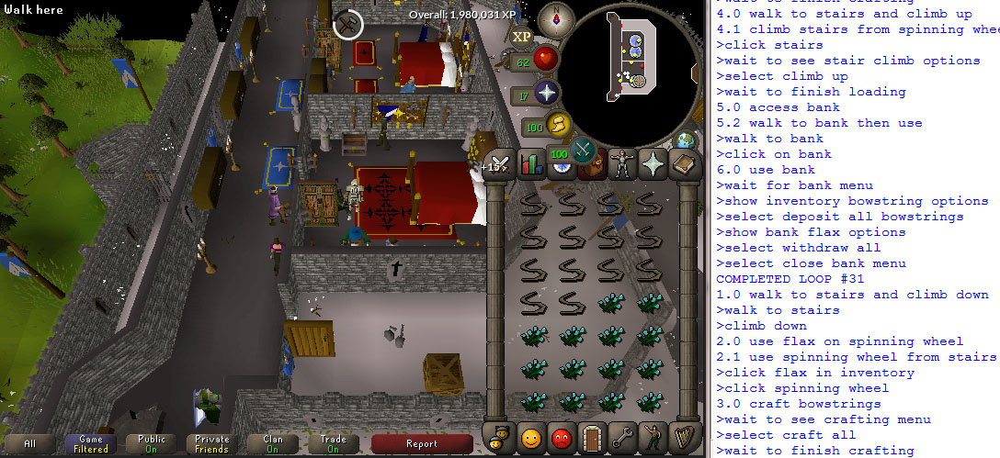

Trevor Bivi
| Software Engineering Student | Home Projects Work Experience About GitHub |
| Minecraft Tools | RuneScape Bot API | Garden Watering System |
| Tetris Bot | Steam Market Analyser | 3D Computer Game |
| Phone Game | Other Projects |
Nov 2017 - Dec 2017
Runescape Bot APIPython was used. This code uses popular libraries such as Numpy, OpenCV2, win32 and PIL.
This is a python API for making undetectable bots to automate repetitive tasks in Old School RuneScape. It provides useful methods to derive information from the game and interact with it. Some key examples are...
- Realistic mouse movements and key presses
- Travel to game coordinates
- Click somewhere relative to a key image
- Find position of text string in game

A bot I made with the API making bowstrings
{kind=link}
A bot I made with the API making bowstrings
Open CV and Numpy are used for image analysis to gather different information about the game. Mouse movements are made less robotic looking by playing back recordings of human mouse movements. To make key presses appear more real, Gaussian random wait times are used between events.
I would like to improve the convenience of some of the methods. For example, the method to travel to a position in game can't get around large obstacles like castle walls well because it does not use pathfinding. Using something like Dijkstra's algorithm to find a path other than a straight line to the end position would allow for shorter, safer programs.